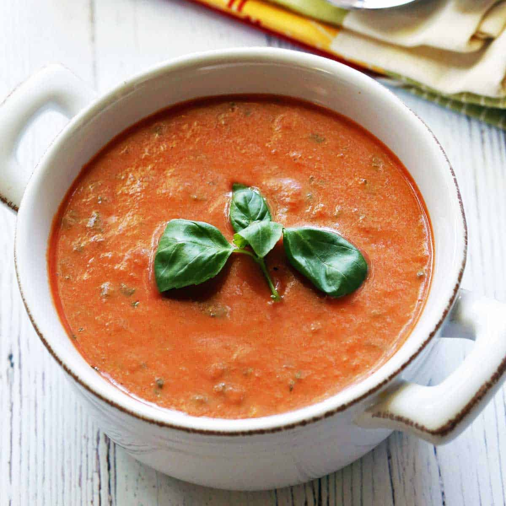

Vegan Tomato Soup

Ingredients needed
- 2 tbsp extra virgin olive oil
- 1 onion, chopped
- 4 cloves garlic, minced
- 4 tomatoes, chopped
- 3.5 cups cherry tomatoes, halved
- 3.5 cups vegetable broth
- 2 bay leaves
- 2 sprigs basil
Cooking instructions
- Heat olive oil in a pot over low heat and cook onion until soft and
translucent. Add garlic and cook until fragrant. Increase heat to
medium and add all tomatoes, cook until they break down (5 mins)
Stir occasionally. Add broth, bay leaves, and 1 sprig of basil. Bring
to a boil, reduce heat, and simmer until soup thickens (30 mins).
- Remove soup from heat and cool slightly. Remove bay leaves and basil.
- Puree tomato soup with an immersion blender until smooth. Reheat before
serving and garnish with basil leaves.